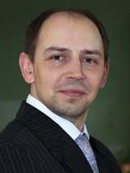
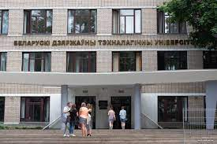

Белорусский государственный технологический университет на протяжении всей своей более чем 90-летней истории занимает ведущие позиции в образовательной и научной сферах. Сегодня он является уникальным, динамично развивающимся инновационным и научным центром. Университет успешно развивает различные научные направления в областях лесного хозяйства, деревообработки, производства строительных материалов, химии и химический технологий, экономики, полиграфии. БГТУ имеет высокий международный авторитет, сертифицировал свою систему менеджмента качества (СМК) в национальной и немецкой системе аккредитации DGA. Университет трижды аккредитован в качестве научной организации в Государственном комитете по науке и технологиям Республики Беларусь и Национальной Академии Наук Беларуси (свидетельства №52 от 11.09. 2011г., № 52 от 15.08.2016 г., № 52 от 11.10.2021 г.). Ученые университета выполняют задания государственных программ различных уровней, отдельные международные и инновационные проекты, гранты, проекты Белорусского республиканского фонда фундаментальных исследований, хозяйственные договора по заказам предприятий и организаций.
Научные исследования по хозяйственным договорам с предприятиями направлены на решение важных прикладных проблем, обеспечивающих выход на мировой уровень разработок по новым композиционным, строительным материалам и изделиям, химическим технологиям и технике, лесного хозяйства и деревопереработке, полиграфии. Общее количество предприятий и организаций, с которыми сотрудничает БГТУ в рамках хозяйственных договоров, составляет более 300. Наши партнеры – лесохозяйственные предприятия, лесопроектные организации, Национальные парки и заповедники, лесоохотничьи хозяйства Республики Беларусь, крупнейшие предприятия Республики Беларусь: ИП «Принткорп», ОАО «Борисовский шпалопропиточный завод», ОАО «СветлогорскХимволокно», РУП «Белгослес», РУП «Институт БелНИИС», ОАО «Борисовский завод пластмассовых изделий», ОАО «Гомельский химический завод», ООО «Фармтехнология», ОАО «Гродненский стеклозавод», ОАО «ПолоцкСтекловолокно», ОАО «Белшина», ГНУ «Институт леса НАН Беларуси», ЗАО «Атлант», ОАО «Светлогорский ЦКК», ОАО «Завод Теплосила», ОАО «Гродно Азот», ОАО «РЕЧИЦАДРЕВ», ГНУ «Центральный ботанический сад НАН Беларуси», ОАО «Борисовский ДОК», ООО «НПП Рогнеда», ОАО «МогилевХимволокно», ОАО «Завод горного воска», ЗАО «Завод полимерных труб», ООО «Строительная техника и материалы», ОАО «Лесохимик», ОАО «Газпромтрансгаз Беларусь», ОАО «Лакокраска», ГНУ «Объединенный институт машиностроения НАН Беларуси», ОАО «Завод Оптик», ЗАО «Парад», ОАО «Гомельстекло», ОАО «Крион», ГНУ «ИФОХ НАН Беларуси», ЗАО «Лидский керамзитовый завод», ОАО «Беларуськалий», лесохозяйственные предприятия, лесопроектные организации, Национальные парки и заповедники, лесоохотничьи хозяйства Республики Беларусь.
В 2021-2025 гг. ученые университета выполняют задания государственных программ научных исследований «Энергетические и ядерные процессы и технологии», «Химические процессы, реагенты и технологии, биорегуляторы и биооргхимия», «Цифровые и космические технологии, безопасность человека, общества и государства», «Фотоника и электроника для инноваций», «Механика, металлургия, диагностика в машиностроении», «Материаловедение, новые материалы и технологии», «Сельскохозяйственные технологии и продовольственная безопасность», «Природные ресурсы и окружающая среда», «Конвергенция -2025», «Общество и гуманитарная безопасность белорусского государства». На период 2021-2025 гг. университет утвержден в качестве головной организации-исполнителя: по подпрограмме «Повышение продуктивности и экологической устойчивости лесов Беларуси» ГНТП «Зеленые технологии ресурсопользования и экобезопасности»; по подпрограмме «Создание новых наукоемких отечественных материалов различного функционального назначения на основе лесохимического и растительного сырья» («Лесохимия-2») ГПНИ «Химические процессы, реагенты и технологии, биорегуляторы и биооргхимия»; по подпрограмме «Гальванотехника» ГПНИ «Механика, металлургия, диагностика в машиностроении»; по подпрограмме «Многофункциональные и композиционные материалы» по созданию прогрессивных технологий получения изделий из термопластичных и термоактивных полимерных материалов ГПНИ «Материаловедение, новые материалы и технологии».
| План приема | Специальность | Количество поданных | |
|---|---|---|---|
| Всего | На одну специальность | ||
| 170 | 85 | Информационные системы и технологии Программная инженерия |
210 |
Декан факультета
Шиман Дмитрий Васильевич
Тел.: 8 (017) 399-33-89
E-mail: it@belstu.by
Адрес: ул. Свердлова 13а, к.4, ауд. 104
Второй крутой абзац, который я не придумал, поэтому здесь будет песенка.
ЛА ЛА ЛА ЛА ЛА ЛА Танцуют звезды и моря.
Инетерсный текст, много инетерсного текста. В конце вас ждет сюрприз. Спасибо за то, что вы такая добрая и позитивная
А теперь песня.
Весна опять пришла, и лучики тепла доверчиво глядят в моё окно.
Опять защемит грудь, и в душу влезет грусть, по памяти пойдёт со мной.
Пойдёт, разворошит! И вместе согрешит с той девочкой, что так давно любил.
С той девочкой ушла, с той девочкой пришла. Забыть её не хватит сил.
Владимирский централ - ветер северный!
Этапом из Твери - зла немерено... Лежит на сердце тяжкий груз.
Владимирский централ - ветер северный.
Хотя я банковал, - жизнь разменяна, но не "очко" обычно губит, а к одиннадцати туз.
Там под окном "зека", проталина тонка, и всё ж, ты, недолга, моя весна.
 А это самый прекрасный и лучший вуз Беларуси Белорусский государственный технический университет
И второй ооооооооочень важный абзац. Здесь очень много инфомрации. Спасибо что приняли лабораторную С меня шоколадка
Фотогалерея БГТУ